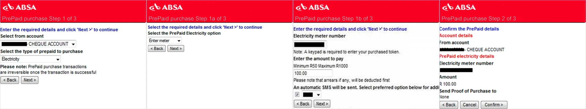
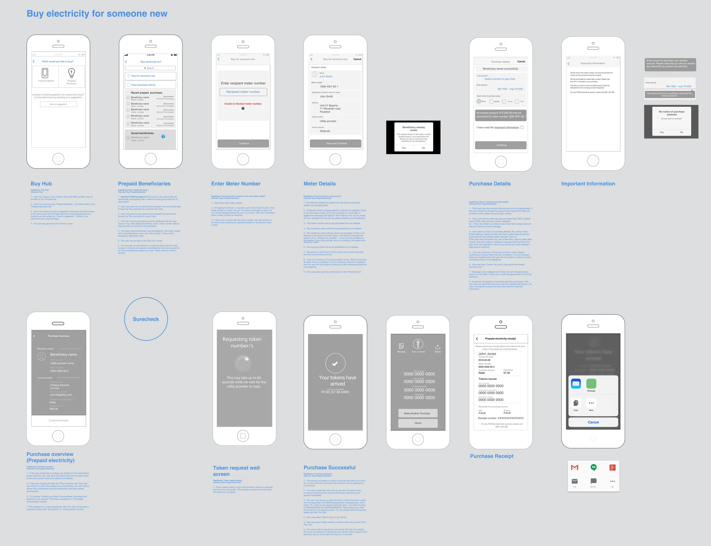

Overview
In 2016 Absa wanted customers to buy prepaid electricity in the Absa app instead of queuing at a shop for a paper slip. I led UX, working with UI designers, a business analyst, a systems analyst, a product owner and the developers. We had about three months for design and one for development.
Two things shaped the work. Every municipality had its own rules for selling electricity, and people usually buy it under stress, often at night after the power has gone. Usage grew month on month, and most people who tried it kept using it.

The finished flow: choose prepaid electricity, enter or pick a meter, check the recipient, pay, then get your tokens.
People buy electricity when the lights are already off
We ran workshops and interviews and mapped the journey from cash in hand to token in the meter. The pattern that stuck was the state people were in. Buying electricity was rarely planned. It happened when the meter ran out, often late at night or in bad weather, so people were stressed and wanted it done fast.

The journey we mapped: inconvenient hours, the queue, paying in cash, losing the slip and typing a 20-digit token.
The old way meant a trip and a slip of paper
Most prepaid customers bought a voucher at a petrol station or shop and got a slip with a 20-digit token to type into the meter at home. Absa already sold prepaid electricity on other channels, but the app needed its own experience. The earlier web steps listed the rules as small print: purchases can’t be reversed, arrears come off first, a keypad is needed.

Absa's earlier PrePaid purchase steps. The rules are there, but only as notes under the fields.
Every municipality had its own rules
Before we could build even a proof of concept, I had to understand how prepaid electricity worked behind the counter. Each municipality had its own rules and procedures for selling electricity, in a store or online, so I studied them and mapped where the requirements differed. Then I sat with business analysts and systems architects to work out how the app would get what it needed from several third-party services outside the bank’s control, and what each API call had to ask for. It was the biggest lift of the project.
The rules had to show up on screen, not in small print
We turned each rule into a moment the customer could act on. The meter number goes to the utility first, so a blocked meter fails on the first screen, not at payment. The meter owner’s name and address come back from the provider and fill in for you. Any arrears show before you pay, with a warning if your amount won’t cover them. Limits of R30 to R1,000 are checked as you type.

The annotated flow for buying electricity for someone new, from the Buy hub to the shared token, with the rule behind each screen.
Read the short case study: Designing inside rules we didn't write
We tested while the plumbing was still moving
New technical details kept surfacing, and each one sent us back to the information architecture. So there wasn’t time for many formal rounds. We built an InVision prototype and ran guerrilla tests with any staff member we could find, fixed the structure, then ran formal user interviews on the high-fidelity prototype. Two usability sessions also checked that people could find the feature in the app.
Fewer digits to type at the worst moment
Meter numbers run to 11 or 13 digits, and nobody wants to type one in a hurry. So customers can save a meter as a beneficiary and pick it next time, and the Buy hub shows their five most recent purchases. If you add a meter you’ve already saved, the app tells you and offers to carry on with the saved one.

The greyscale flow, start to finish, including the hard cases: an invalid or blocked meter, a meter that's already saved, and a wait of up to 60 seconds while the utility replies.
The token goes first on the receipt
Each municipality decides what a receipt must show, and much of it is detail nobody needs while standing at a meter. We put the token and the kWh you bought at the top and moved the rest to a full receipt one tap away. Key-change tokens must go in a set order, so we number them. Share sends the tokens in a ready-made message, sequence note included.
A torch switch on the token screen
In one workshop we pictured where people actually are at this point: often in the dark, trying to make dinner, phone in one hand, squinting at a meter keypad. So we put an on/off torch switch on the screen that shows the token. One tap turns on the phone’s flashlight, and the token stays on screen while you type it in.

The torch sits in the middle of the token screen's top bar, between Receipt and Share.
Read the short case study: I'm in the dark! The torch switch
After launch, lost tokens told us what to build next
Analytics showed a large share of customers weren’t receiving their tokens, so I worked with engineering to make delivery from the service provider more reliable. App store reviews and the call centre showed a second problem: people emailing and calling to get tokens back. Surveys explained it. They bought before they got home and lost the token on the way. We added a purchase history so any token is a tap away.
Usage grew month on month
We measured success by completed purchases, usability and repeat purchases. Prepaid purchase activity grew month on month, repeat purchases were high, and it gave the bank a new revenue stream.
This sat inside the wider Absa app redesign, which reached a 4-star average on both app stores and reduced calls to the call centre. Those are app-wide results, not this feature’s alone.

Before and after: Absa's earlier three-step prepaid form (left), and the new app flow ending on a numbered token card with the torch above it (right).